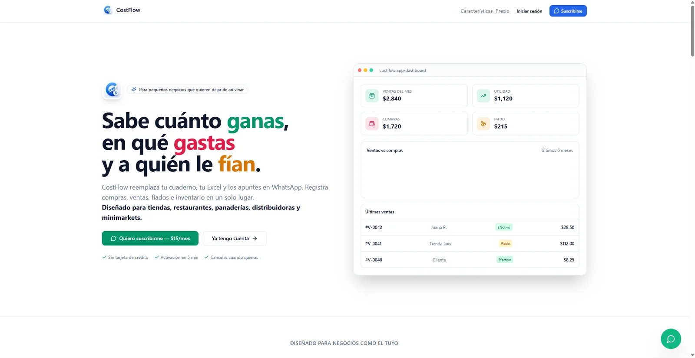
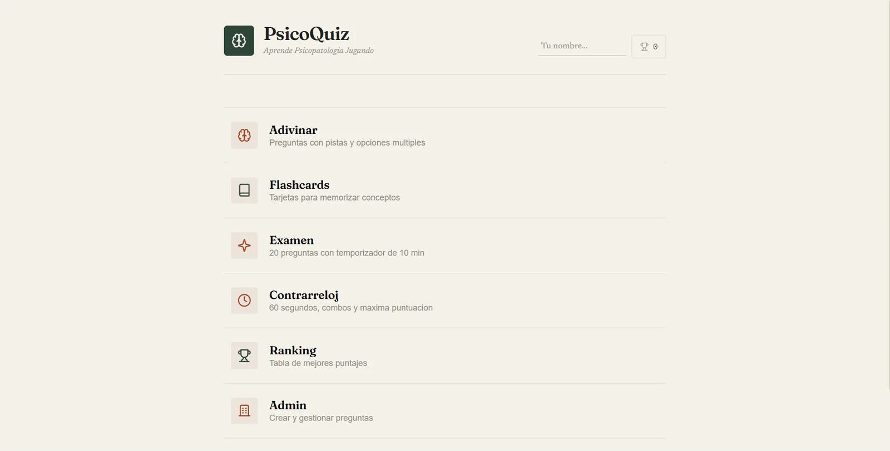

No te encuentran
Errores de rastreo, indexación, arquitectura o señales técnicas confusas reducen la visibilidad.
INDEXACIÓN · CANONICAL · SITEMAPTechnical SEO · Web Security · Performance
Analizamos y corregimos los problemas de SEO, rendimiento y seguridad que afectan la visibilidad, la confianza y el crecimiento de tu sitio.
Auditorías técnicas · Optimización · Implementación · Monitoreo
Indexación bloqueadaRequiere revisión prioritaria
→EL PROBLEMA NO SIEMPRE ES VISIBLE
La apariencia es solo una capa. Debajo existen decisiones de rastreo, código, infraestructura y seguridad que determinan si el sitio puede encontrarse, cargar bien y generar confianza.
Errores de rastreo, indexación, arquitectura o señales técnicas confusas reducen la visibilidad.
INDEXACIÓN · CANONICAL · SITEMAPImágenes, JavaScript y carga móvil deficiente crean fricción antes de que el cliente actúe.
CORE WEB VITALS · FRONTEND · CDNDependencias, accesos y cabeceras mal configuradas aumentan la superficie de ataque.
HTTPS · HEADERS · DEPENDENCIASReportes aislados y métricas sin contexto hacen difícil decidir dónde invertir primero.
IMPACTO · SEVERIDAD · PLAN DE ACCIÓNOFERTA PRINCIPAL
Un diagnóstico técnico para entender qué está fallando, por qué importa y qué conviene corregir primero.
Revisamos el sitio como un sistema: visibilidad, experiencia, infraestructura y exposición. El resultado conecta cada hallazgo técnico con su posible impacto en el negocio.
Solicitar auditoría ↗Rastreo, indexación, arquitectura, metadata, canonical, sitemap, robots.txt, enlaces internos, datos estructurados y señales para buscadores.
HTTPS/TLS, cabeceras, dependencias, autenticación, exposición, formularios, backups, WAF y riesgos comunes basados en OWASP.
Core Web Vitals, imágenes, fuentes, JavaScript, caché, CDN, renderizado, estabilidad visual y experiencia móvil.
DNS, infraestructura, errores, enlaces rotos, tecnologías, integraciones, disponibilidad y mantenibilidad técnica.
UN INFORME QUE SE PUEDE USAR
Recibes una explicación ejecutiva, hallazgos documentados, severidad, impacto potencial, prioridades y acciones correctivas. Cuando corresponde, también planteamos la implementación.
TRES PILARES, UNA MISMA BASE TÉCNICA
Eliminamos obstáculos para que los buscadores puedan rastrear, comprender e indexar el sitio correctamente.
Reducimos fricción técnica para mejorar experiencia, conversión y señales de calidad.
Identificamos riesgos y fortalecemos la postura de seguridad sin vender protección absoluta.
AI SEARCH VISIBILITY
Hacemos que la información de una empresa sea técnicamente clara, estructurada, rastreable y comprensible.
Trabajamos arquitectura semántica, entidad de marca, datos estructurados, contenido útil, autoridad temática, enlazado interno e indexación para buscadores tradicionales y nuevas experiencias basadas en IA.
MODELO DE TRABAJO
La auditoría funciona como puerta de entrada. A partir de datos reales, podemos corregir lo prioritario o acompañar la mejora continua.
Para empresas que necesitan saber qué está fallando antes de invertir.
Para negocios que quieren ejecutar mejoras técnicas de forma sostenida.
Para empresas que necesitan evolución técnica y seguridad más sólida.
CAPACIDAD DE IMPLEMENTACIÓN
No nos limitamos a entregar un informe. Si la solución requiere cambios estructurales, integración o reconstrucción, podemos implementarla.
CASOS Y PROYECTOS REALES
Separamos resultados medidos, sitios publicados y proyectos demostrativos. Cada afirmación indica qué se hizo y qué evidencia existe.
Rediseñamos la presencia digital de CodeGurex, optimizamos los recursos visuales y reforzamos la entrega del sitio con controles de seguridad en el borde.
Sitios, aplicaciones y demostraciones funcionales.




LABORATORIO TÉCNICO
POR QUÉ CODEGUREX
CodeGurex nació desde el desarrollo y la ciberseguridad.
Por eso analizamos una web desde dentro: código, infraestructura, rendimiento, indexación y superficie de ataque. Somos una empresa técnica de Ecuador, accesible y preparada para trabajar de forma remota.
Dirección técnica cercanaEl proyecto muestra un fundador visible y una atención directa. No simulamos una estructura de equipo que no está documentada.
No decidimos únicamente por apariencia.
Forma parte de la arquitectura.
No solo identificamos problemas.
No garantizamos posiciones ni seguridad absoluta.
Qué sucede, por qué importa y qué hacer primero.
UN PROCESO CON PRIORIDADES
Analizamos el estado técnico actual.
Separamos lo urgente, importante y potencial.
Implementamos o acompañamos las mejoras.
Verificamos resultados y evolución.
Monitoreamos con seguimiento continuo.
FORMACIÓN TÉCNICA
Conservamos los estudios declarados en el proyecto original y diferenciamos certificaciones de cursos.
PREGUNTAS FRECUENTES
No necesitas llegar con un diagnóstico. Para comenzar basta con la URL y el contexto del negocio.
Es una revisión estructurada del SEO técnico, rendimiento, seguridad e infraestructura para detectar obstáculos, evaluar su impacto y ordenar las correcciones.
No. Se ocupa de la base que permite rastrear, comprender, indexar y servir el contenido correctamente.
Sí. Podemos analizar sitios existentes y recomendar o implementar mejoras.
Definimos el alcance antes de revisar. Cualquier prueba con posible impacto requiere autorización específica.
No. Ningún proveedor serio puede garantizar una posición específica. Mejoramos la base técnica y eliminamos obstáculos.
No. CodeGurex opera desde Ecuador y puede trabajar de forma remota con empresas de otros países.
Sí, especialmente cuando una auditoría revela que la solución exige cambios estructurales o reconstrucción.
Podemos auditar WordPress. La implementación se define según el acceso y la arquitectura del sitio.
La URL, los objetivos y una breve explicación del problema. Pedimos acceso solo cuando sea necesario.
EL PRIMER PASO ES MEDIR
Analizamos tu sitio desde SEO, rendimiento y seguridad para ayudarte a priorizar las mejoras que realmente importan.
SOLICITAR DIAGNÓSTICO
Con la información esencial podemos orientarte sin pedir contraseñas ni acceso técnico. Al finalizar, tú decides si envías la solicitud por WhatsApp.